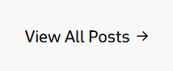
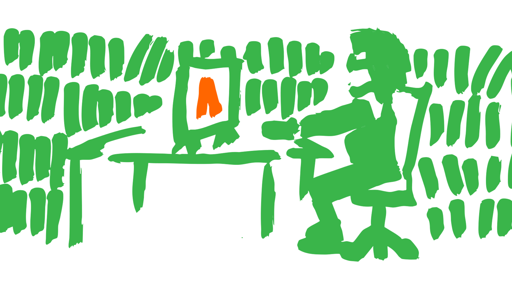
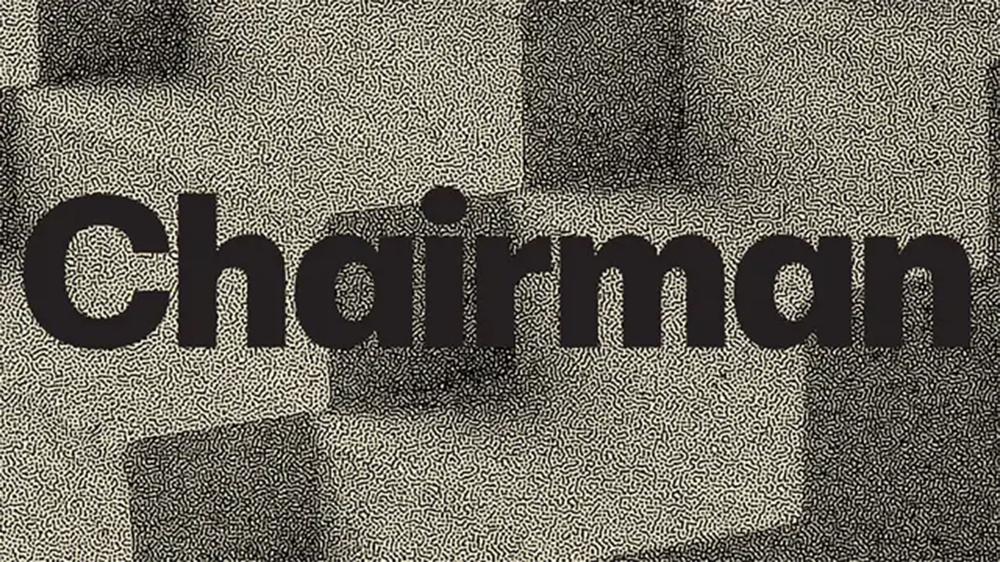
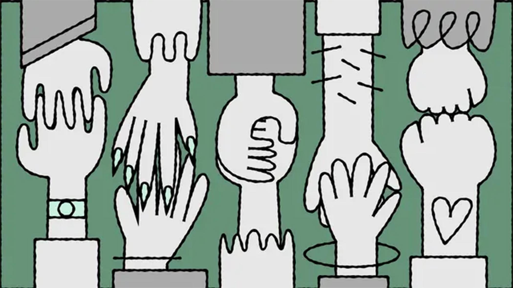
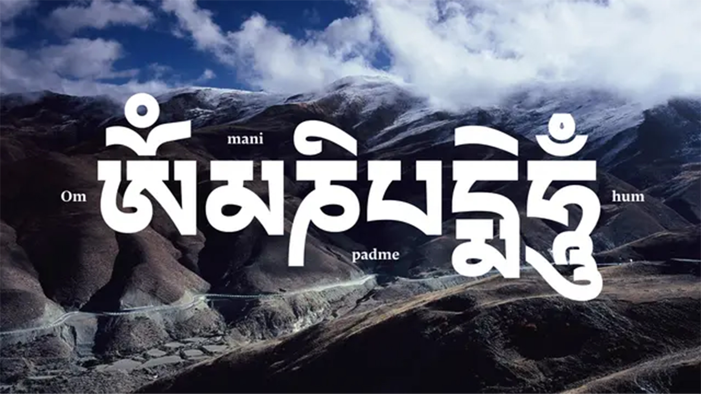

9 Jun 2026
Announcements
Typotheque is looking for a junior graphic designer, 2-3 days a week to design type specimens.

8 Jun 2026
New fonts . Announcements
Chairman is a utilitarian neo-grotesque that grows quieter at headline sizes and sparkier in running text, with three width systems that shape the rhythm of paragraphs

21 May 2026
by Héctor Mangas . Research
Today, in celebration of Global Accessibility Awareness Day, we are launching accessibility.tools — a free toolkit built for designers who want to create more inclusive work.

21 May 2026
New fonts . New articles
We already support 26 writing scripts, and today we add another: Tibetan, created in the 7th century to translate Buddhist texts, has barely changed since — while the spoken language has shifted dramatically.